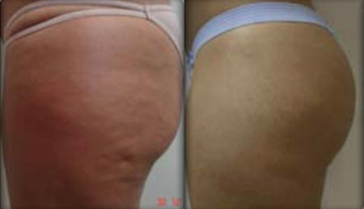
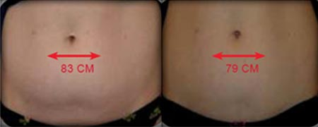

60–90 min
Trajanje tretmaja je odvisno od velikosti in števila obravnavanih predelov.

Ultrazvočna lipoliza · radiofrekvenca
Neinvazivna podpora konturi telesa, tonusu kože, videzu celulita in lokaliziranim maščobnim oblogam.
Quantum Health
ULTRA tehnologija združuje ultrazvočno lipolizo in unipolarno radiofrekvenco. Namenjena je izboljšanju telesne silhuete, tonusa kože in videza izbranih predelov telesa.
Trajanje tretmaja je odvisno od velikosti in števila obravnavanih predelov.
Priporočeno število obiskov za boljši in postopno viden rezultat.
Proces se po tretmaju nadaljuje, končni učinek posamezne obravnave pa se razvija postopno.
Kako deluje
Ultrazvočni impulzi delujejo na podkožno maščevje, radiofrekvenčna energija pa pomaga pri segrevanju tkiva, tonusu kože in podpori limfnega pretoka. Postopek je zasnovan kot neinvazivna alternativa za oblikovanje izbranih predelov telesa.
Najbolj smiselno je za osebe z realnimi pričakovanji, ki želijo ciljno podporo pri konturi telesa in bolj urejenem videzu kože.
Tehnologija
Postopek združuje več tehnologij, ki skupaj podpirajo oblikovanje telesa in boljši videz kože.
Usmerjeno deluje na lokalizirane maščobne obloge in pomaga izboljšati telesno silhueto na izbranih predelih.
Kompresijski valovi predhodno segrejejo ciljno področje, strižni valovi pa podprejo postopno obravnavo maščobnih celic.
Radiofrekvenčna energija podpira tonus kože, videz celulita in odvajanje odpadnih snovi skozi limfni sistem.
Primeri
Slike so prikazane v originalnem razmerju, brez agresivnega rezanja ali raztegovanja.


Potek
Določi se področje obravnave, cilj, primernost metode in realna pričakovanja.
Obravnava običajno traja 60–90 minut in se prilagodi predelu telesa.
Učinki se razvijajo postopno, zato se spremlja odziv telesa in po potrebi prilagodi načrt.
Pogosta vprašanja
Kratek in pregleden odgovor na vprašanja, ki jih ima obiskovalec pred tretmajem.
Terapija združuje ultrazvočno lipolizo in radiofrekvenco. Ultrazvok cilja na lokalizirane maščobne obloge, radiofrekvenca pa podpira tonus kože, limfni pretok in bolj urejen videz obravnavanega področja.
Na videz celulita vplivajo maščobne celice, vezivno tkivo, hormonski dejavniki, mikrocirkulacija, življenjski slog in genetika. Zato je najboljši pristop običajno kombinacija tretmajev in urejenih navad.
Prednost je neinvaziven pristop brez kirurškega posega, brez daljšega okrevanja in z možnostjo ciljne obravnave predelov, kot so trebuh, stegna, zadnjica, boki, roke ali hrbet.
Nekateri učinki so lahko opazni hitro, proces pa se nadaljuje še več dni po obravnavi. Na strani je navedeno, da se maksimalni učinek posameznega tretmaja razvija okoli sedmega dne.
Priporočljivo število tretmajev je običajno 4–6, odvisno od cilja, področja obravnave in odziva telesa.
Prijava
Pošljite osnovne podatke in kratek opis želje. Skupaj izberemo najbolj smiseln pristop.